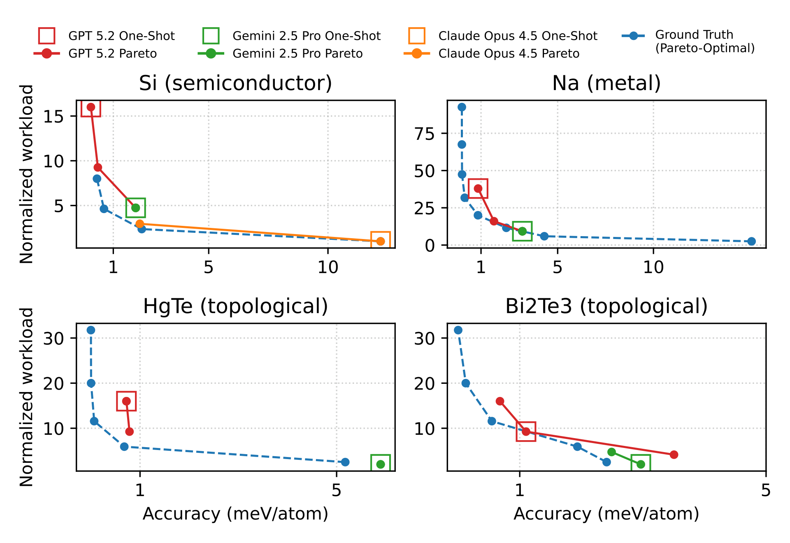
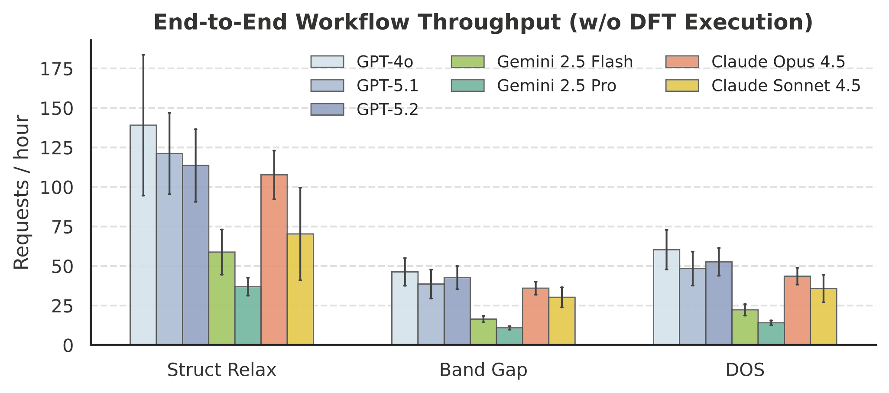
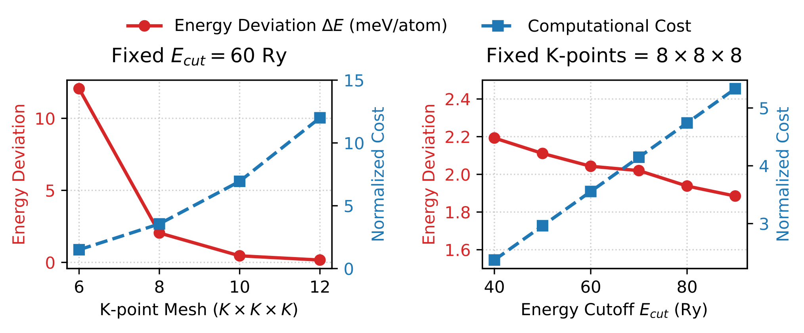

TritonDFT
Automating Density Functional Theory with a Multi-Agent Framework
Density Functional Theory (DFT) is a cornerstone of materials science, yet executing DFT in practice requires coordinating a complex, multi-step workflow. We present TritonDFT, a multi-agent framework that enables efficient and accurate DFT execution through an expert-curated, extensible workflow design, Pareto-aware parameter inference, and multi-source knowledge augmentation. We further introduce DFTBench, a benchmark for evaluating the agent's multi-dimensional capabilities, spanning science expertise, trade-off optimization, HPC knowledge, and cost efficiency.

Based on our survey with 19 domain researchers at the PhD level or above, DFT execution is a complex, multi-step process requiring heterogeneous domain expertise. TritonDFT reduces the per-step time from minutes–hours to seconds–minutes, providing automation across the entire workflow.
Introduction
Density Functional Theory (DFT) stands as the computational cornerstone of modern materials science. As a first-principles method, DFT provides high-fidelity predictions to validate theoretical hypotheses and reduce experimental cost. However, executing DFT in practice involves a complex, multi-step workflow: practitioners must search for structural information, configure input parameters, write DFT-software-specific scripts, launch and monitor HPC jobs, and interpret execution results.
As shown in our internal survey with 19 domain researchers at the PhD level or above, manually handling each step typically takes minutes to hours. This imposes substantial overhead and slows down the discovery process. While existing DFT tools can handle certain low-level details, users still need to manually handle most of the steps and coordinate the overall workflow.
Such manual overhead gives rise to a natural question: Can we leverage LLM-based agents to orchestrate these steps and enable automation?
We introduce TritonDFT, a trainable multi-agent framework that enables efficient and accurate DFT execution through:
- Expert-curated, extensible workflow design — with explicit task-to-executable mapping
- Pareto-aware parameter inference — for accuracy-cost trade-off optimization
- Multi-source knowledge augmentation — including domain tools, historical memory, and human-in-the-loop interaction
We further introduce DFTBench, a benchmark for evaluating the agent's multi-dimensional capabilities — spanning science expertise, trade-off optimization, HPC knowledge, and cost efficiency.

Figure 1. Performance analysis with Pass Rate and
Cost Efficiency across different material types. Cost Efficiency is measured as
(1 / Cost Factor), averaged over all passed cases within each type.
Demo
Watch TritonDFT in action — from user query to automated DFT execution, parameter optimization, and result analysis.
TritonDFT Demo. End-to-end automated DFT workflow execution, showcasing the multi-agent framework with Pareto-aware parameter inference and iterative refinement.
TritonDFT: An Expert-Informed Multi-Agent System

Overview of TritonDFT, a multi-agent system for automated DFT workflow execution. Four specialized agents — Planner, Executor, Analyzer, and Refiner — interact via shared knowledge base and task-specific tools. The Plan-Execute-Refine loop enables iterative optimization and error recovery.
Multi-Agent Architecture
TritonDFT adopts a Plan-Execute-Refine workflow with four specialized agents:
Planner Agent
Decomposes user queries into computational steps, selects appropriate DFT methods, and determines task-to-executable mappings based on material properties and desired outputs.
Executor Agent
Generates DFT software-specific input scripts (Quantum Espresso, VASP), manages HPC resource allocation, launches jobs, and monitors execution progress.
Analyzer Agent
Parses DFT output files, extracts physical quantities, validates convergence criteria, and identifies numerical errors or physical inconsistencies.
Refiner Agent
Adjusts parameters based on convergence tests, recovers from failures, and iteratively optimizes configurations to meet accuracy and cost requirements.
DFTBench: Multi-Dimensional Capability Evaluation
Despite extensive benchmarks like graduate-level materials-domain knowledge, key capabilities in end-to-end DFT workflows — including numerical accuracy, Pareto-optimality, HPC parallelization, and cost efficiency — remain unevaluated. DFTBench evaluates these capabilities.
Spanning 10 distinct types
Expert-curated ground truth
Multi-faceted evaluation
Evaluation Dimensions
Science Expertise
Understanding of physics and materials science concepts, DFT theory, and domain-specific knowledge required for parameter selection.
Trade-off Optimization
Ability to estimate and optimize the accuracy-cost Pareto frontier, balancing numerical fidelity with computational efficiency.
HPC Knowledge
Expertise in parallelization strategies, resource allocation, job scheduling, and optimization of computational workflows on HPC systems.
Cost Efficiency
Practical efficiency in real-world resource usage, minimizing wall-clock time and computational cost while maintaining accuracy requirements.
Experimental Results
Framework Comparison
We compare TritonDFT with state-of-the-art agentic DFT frameworks. TritonDFT provides the most comprehensive evaluation on a diverse dataset of 10 material categories, uniquely benchmarking accuracy-cost tradeoff, parallel efficiency, and monetary cost.
| Method | Framework Architecture | Evaluation Dataset & Metrics | ||||||
|---|---|---|---|---|---|---|---|---|
| Supported Tasks | Param Config | Knowledge Aug | Material Types | Ground Truth | Acc-Cost | Parallel | Monetary | |
| DREAMS | Surface Chemistry (Adsorption) |
Physics Only | Open Database | 2 (Metal, Insulator) | Public Dataset | |||
| VASPilot | Electronic Structure (Band, DOS) |
Physics Only | Open Database | 1 (Semiconductor) | Public Dataset | |||
| AgenticDFT | Geometry & Energetics (Relaxation, Band) |
Physics Only | Open Database | 2 (Metal, Semiconductor) | Public Dataset | |||
| TritonDFT (Ours) | General QE Usage (>10 task types) |
Physics + HPC (Pareto-aware) |
Open DB + Memory + Human-in-the-loop |
10 (Metal, Insulator, Superconductor, Topological,…) |
Expert Curated | |||
Table 1. Comparison of TritonDFT with state-of-the-art agentic DFT frameworks. Ours uniquely covers accuracy-cost trade-off, parallel efficiency, and monetary cost.
Parameter Configuration Performance
Model performance on DFT parameter configuration across different LLMs under varying error thresholds. GPT 5.2 achieves the highest pass rates; Claude Opus 4.5 excels at advanced parameter satisfaction.
| Model | ΔE < 20 meV/atom | ΔE < 10 meV/atom | ΔE < 1 meV/atom | Advanced Param. Satisfaction |
|||
|---|---|---|---|---|---|---|---|
| Pass Rate | Cost Factor | Pass Rate | Cost Factor | Pass Rate | Cost Factor | ||
| GPT 5.2 | 70.5% | 14.29 | 67.0% | 8.95 | 47.1% | 4.23 | 51.3% |
| GPT 5.1 | 39.3% | 6.22 | 32.9% | 4.21 | 9.8% | 2.24 | 43.6% |
| GPT 4o | 52.8% | 1.85 | 38.2% | 1.28 | 13.6% | 0.50 | 28.2% |
| GPT 4o mini | 5.7% | 1.01 | 5.6% | 1.17 | 4.5% | 0.97 | 28.2% |
| Gemini 2.5 Pro | 59.6% | 3.77 | 53.9% | 2.95 | 14.9% | 1.24 | 48.7% |
| Gemini 2.5 Flash | 23.6% | 1.85 | 16.9% | 1.68 | 2.3% | 0.78 | 38.5% |
| Claude Opus 4.5 | 9.0% | 1.62 | 5.6% | 1.33 | 4.5% | 0.58 | 53.8% |
| Claude Sonnet 4.5 | 30.3% | 2.38 | 25.8% | 1.93 | 21.6% | 0.87 | 38.5% |
Table 2. Model performance on DFT parameter configuration. GPT 4o demonstrates the best cost efficiency (green values).
Performance by Material Type

Figure 3. Energy deviation and computational cost variations with different DFT parameters for Silicon. TritonDFT learns to identify and select configurations on the Pareto frontier, achieving optimal accuracy-cost trade-offs.
Accuracy Analysis
Mean absolute error (MAE, %) across different DFT tasks, computed over successfully finished execution results.
| Model | VC-relax | SCF | Band Gap | DOS |
|---|---|---|---|---|
| GPT 5.2 | 0.04 | 0.04 | 0.09 | 0.97 |
| GPT 5.1 | 0.06 | 0.07 | 0.31 | 2.21 |
| GPT 4o | 0.10 | 1.11 | 2.48 | 9.04 |
| Gemini 2.5 Pro | 0.05 | 0.09 | 1.14 | 1.40 |
| Gemini 2.5 Flash | 0.06 | 0.83 | 1.21 | 11.17 |
| Claude Opus 4.5 | 0.06 | 0.11 | 2.10 | 3.00 |
| Claude Sonnet 4.5 | 0.09 | 0.14 | 2.00 | 2.12 |
Table 3. Mean absolute error (%) across different DFT tasks. Lower is better. GPT 5.2 consistently achieves the lowest errors.
Throughput & Cost Tradeoff

Figure 4. Throughput comparison (excluding DFT execution time) across different models.

Figure 5. K-point grid and computational cost tradeoff analysis for DFT calculations.
Cost Analysis
Average API cost (USD) per query.
| Model | Struct Relax | Band Gap | DOS |
|---|---|---|---|
| GPT 5.2 | 0.05 ± 0.02 | 0.15 ± 0.04 | 0.13 ± 0.04 |
| GPT 5.1 | 0.04 ± 0.02 | 0.13 ± 0.04 | 0.10 ± 0.03 |
| GPT 4o | 0.06 ± 0.03 | 0.18 ± 0.04 | 0.14 ± 0.03 |
| Gemini 2.5 Pro | 0.05 ± 0.03 | 0.13 ± 0.04 | 0.11 ± 0.04 |
| Gemini 2.5 Flash | 0.01 ± 0.01 | 0.03 ± 0.01 | 0.03 ± 0.01 |
| Claude Opus 4.5 | 0.15 ± 0.08 | 0.44 ± 0.13 | 0.37 ± 0.11 |
| Claude Sonnet 4.5 | 0.15 ± 0.06 | 0.34 ± 0.09 | 0.28 ± 0.08 |
Table 4. Average API cost per query. Gemini 2.5 Flash is the most cost-effective.
Parallel Efficiency
Relative speedup (%) over default baseline.
| Model | 16 Cores | 32 Cores | 64 Cores |
|---|---|---|---|
| GPT 5.2 | 87.4% | 72.1% | 58.3% |
| GPT 5.1 | 72.5% | 61.8% | 49.2% |
| GPT 4o | 65.3% | 54.9% | 43.7% |
| Gemini 2.5 Pro | 78.9% | 67.4% | 53.6% |
| Claude Opus 4.5 | 81.2% | 69.8% | 55.4% |
| Claude Sonnet 4.5 | 74.6% | 63.2% | 50.1% |
Table 5. Parallel efficiency on 16 / 32 / 64 cores.